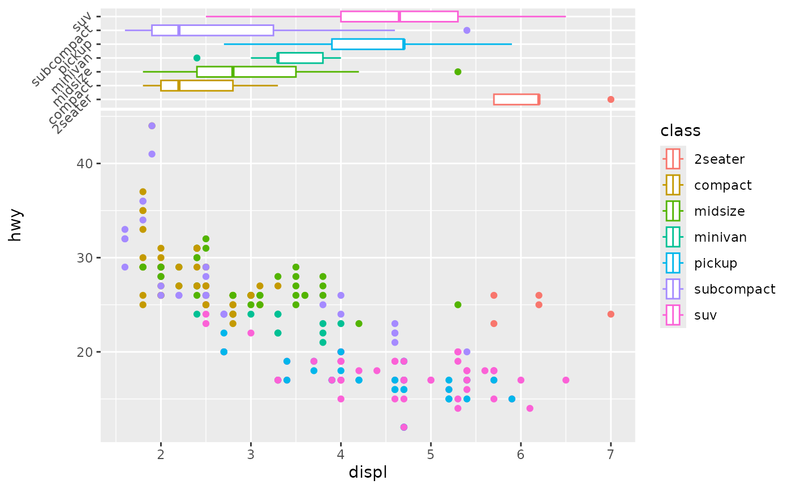
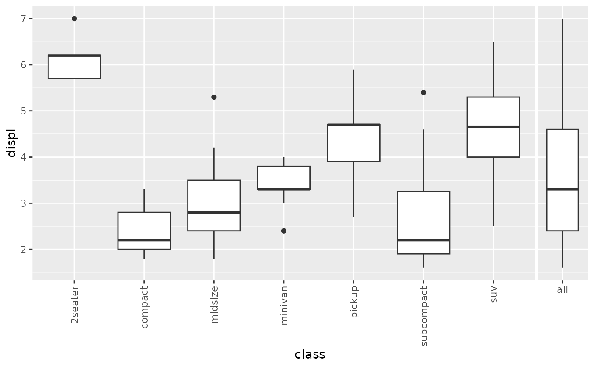

The xside and yside variants of scale_x_discrete/scale_y_discrete. scale_xsidey_discrete enables better control on how the y-axis is rendered on the xside panel and scale_ysidex_discrete enables better control on how the x-axis is rendered on the yside panel.
Arguments passed on to discrete_scale
breaksOne of:
limitsOne of:
NULL to use the default scale values
A character vector that defines possible values of the scale and their order
A function that accepts the existing (automatic) values and returns new ones. Also accepts rlang lambda function notation.
dropShould unused factor levels be omitted from the scale?
The default, TRUE, uses the levels that appear in the data;
FALSE includes the levels in the factor. Please note that to display
every level in a legend, the layer should use show.legend = TRUE.
na.translateUnlike continuous scales, discrete scales can easily show
missing values, and do so by default. If you want to remove missing values
from a discrete scale, specify na.translate = FALSE.
na.valueIf na.translate = TRUE, what aesthetic value should the
missing values be displayed as? Does not apply to position scales
where NA is always placed at the far right.
aestheticsThe names of the aesthetics that this scale works with.
minor_breaksOne of:
NULL for no minor breaks
waiver() for the default breaks (none for discrete, one minor break
between each major break for continuous)
A numeric vector of positions
A function that given the limits returns a vector of minor breaks. Also accepts rlang lambda function notation. When the function has two arguments, it will be given the limits and major break positions.
labelsOne of the options below. Please note that when labels is a
vector, it is highly recommended to also set the breaks argument as a
vector to protect against unintended mismatches.
NULL for no labels
waiver() for the default labels computed by the
transformation object
A character vector giving labels (must be same length as breaks)
An expression vector (must be the same length as breaks). See ?plotmath for details.
A function that takes the breaks as input and returns labels as output. Also accepts rlang lambda function notation.
callThe call used to construct the scale for reporting messages.
superThe super class to use for the constructed scale
For position scales, a vector of range expansion constants used to add some
padding around the data to ensure that they are placed some distance
away from the axes. Use the convenience function expansion()
to generate the values for the expand argument. The defaults are to
expand the scale by 5% on each side for continuous variables, and by
0.6 units on each side for discrete variables.
A function used to create a guide or its name. See
guides() for more information.
For position scales, The position of the axis.
left or right for y axes, top or bottom for x axes.
ggside_scale object inheriting from ggplot2::ScaleDiscretePosition
library(ggside)
library(ggplot2)
# adding discrete y-scale to the x-side panel, when main panel mapped to continuous data
ggplot(mpg, aes(displ, hwy, colour = class)) +
geom_point() +
geom_xsideboxplot(aes(y=class), orientation = "y") +
theme(ggside.panel.scale = .3) +
scale_xsidey_discrete(guide = guide_axis(angle = 45))

#If you need to specify the main scale, but need to prevent this from
#affecting the side scale. Simply add the appropriate `scale_*side*_*()` function.
ggplot(mpg, aes(class, displ)) +
geom_boxplot() +
geom_ysideboxplot(aes(x = "all"), orientation = "x") +
scale_x_discrete(guide = guide_axis(angle = 90)) + #rotate the main panel text
scale_ysidex_discrete() #leave side panel as default
